Understand the whole system
CPU, memory, GPU, battery, disks, network, temperatures, and the processes behind them.
Native intelligence for macOS
Performance, storage, thermals, local AI workloads, and practical maintenance — made visible in one native control center.
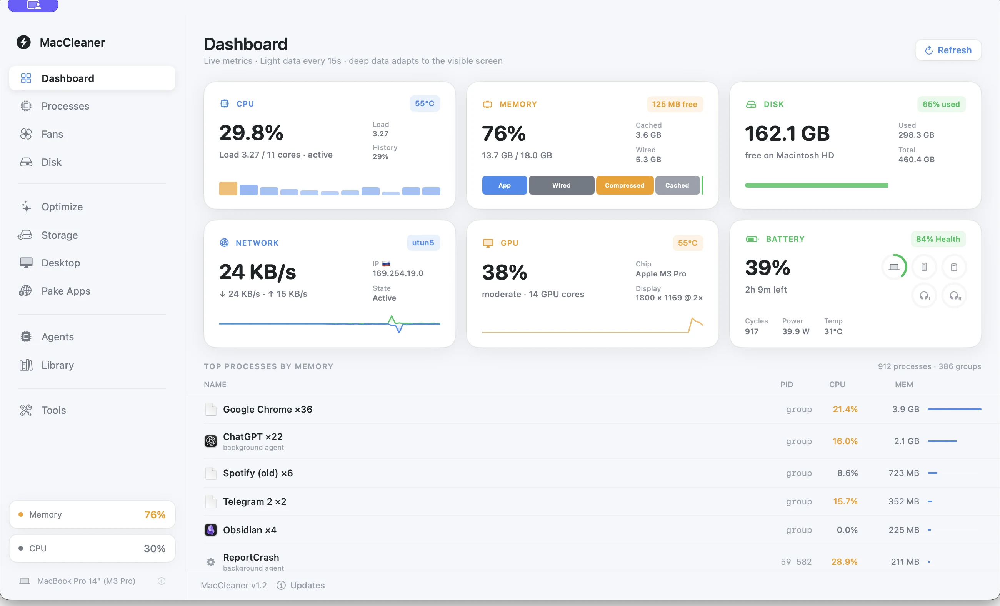
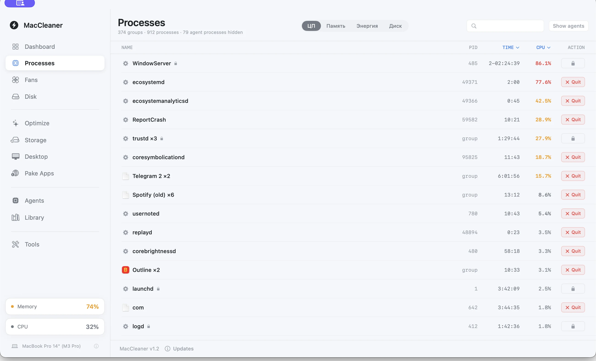
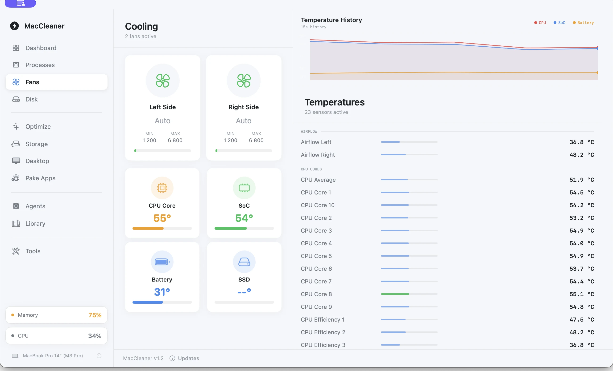
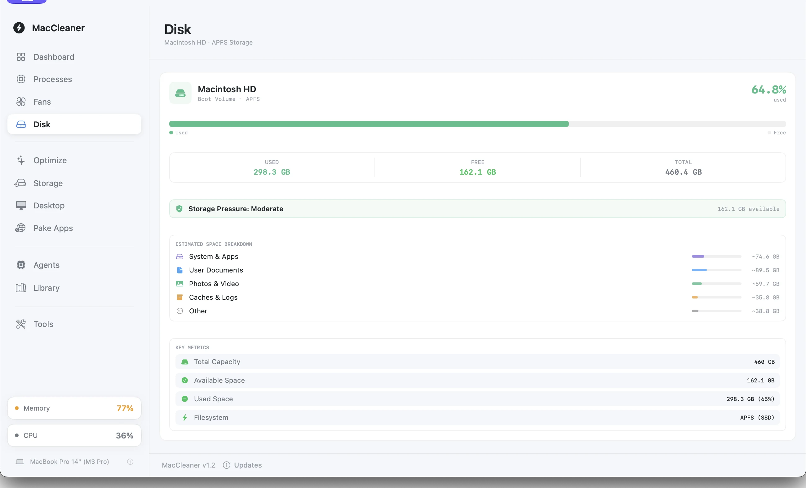
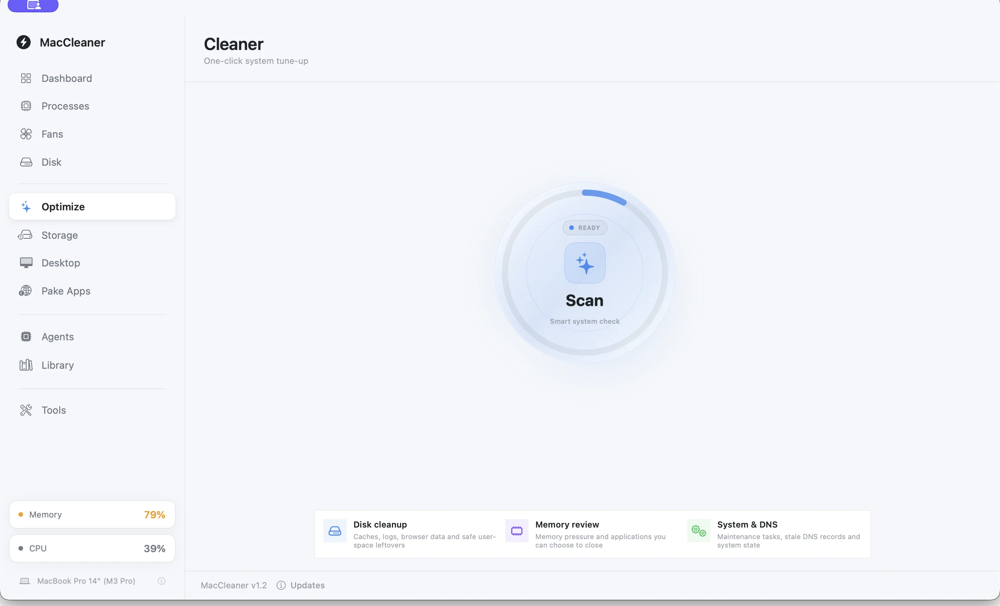
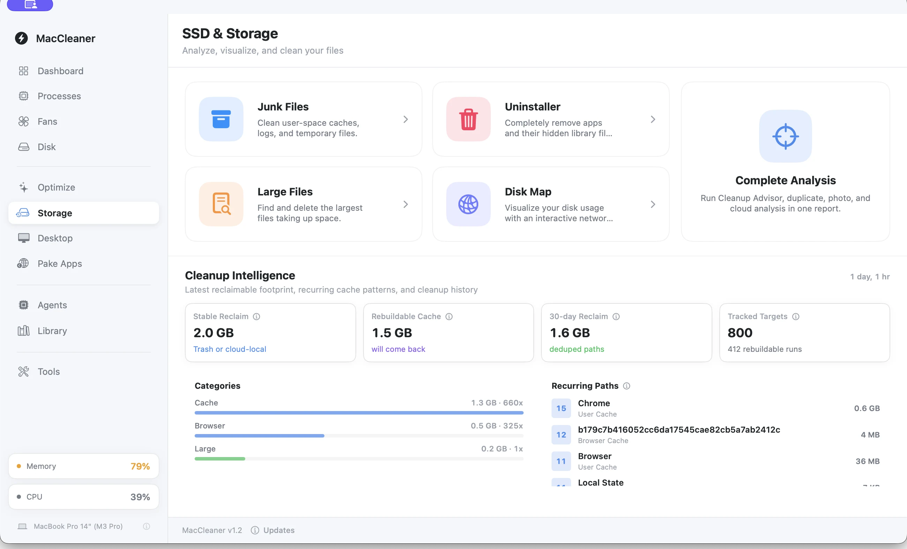
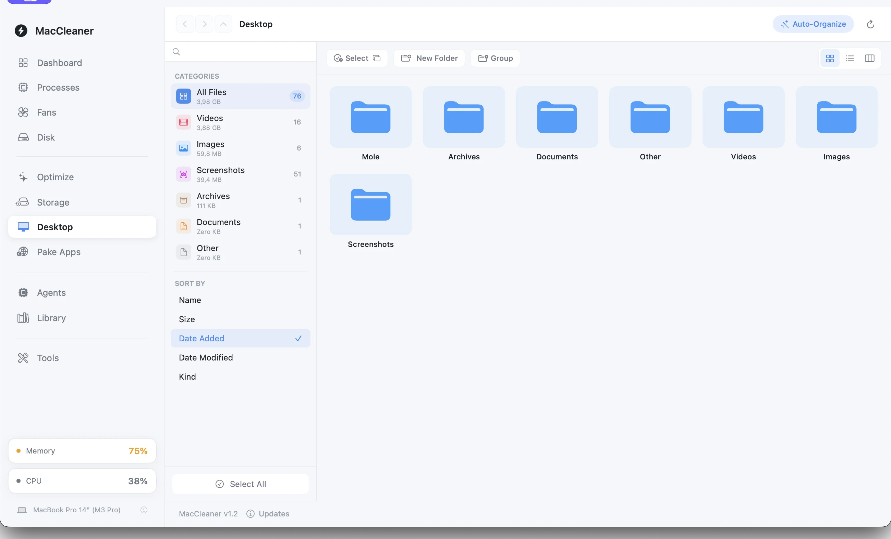
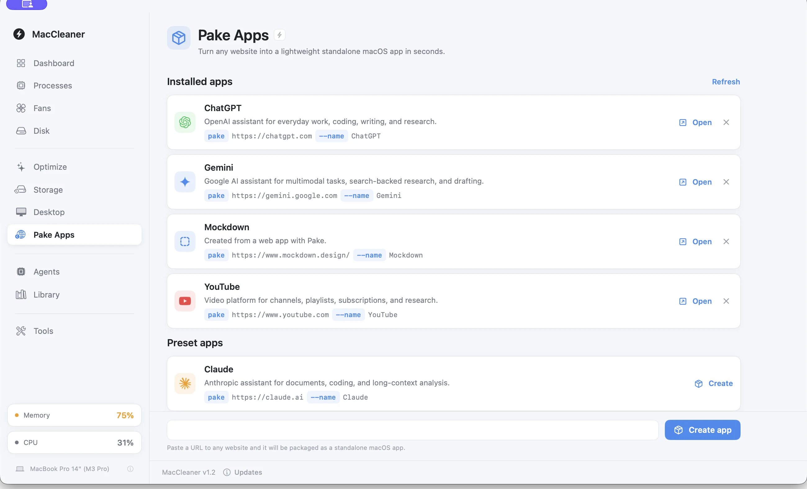
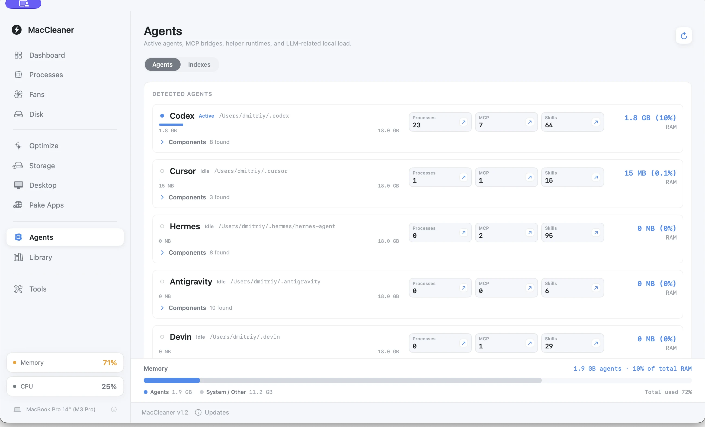
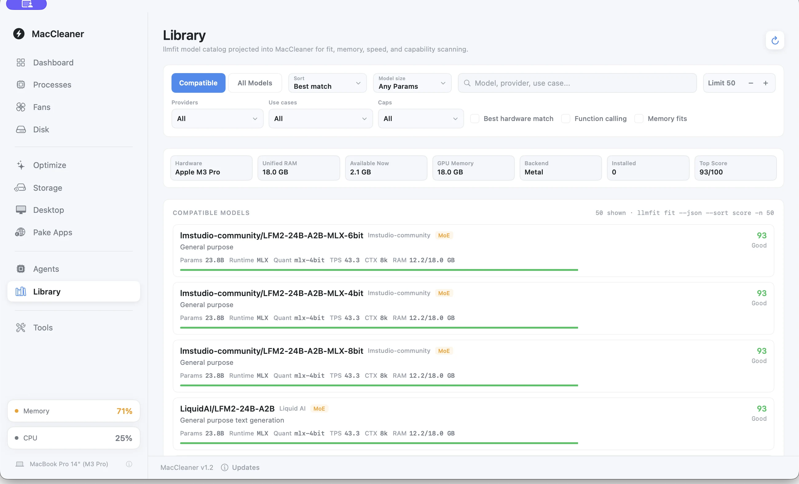
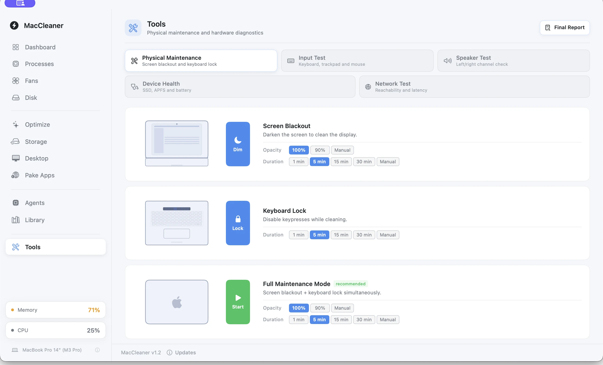
01 / 11Dashboard — use the arrows, tabs, or the real sidebar
01 / Product
MacCleaner connects live system context, storage intelligence, safe maintenance, and practical diagnostics in one native interface.
CPU, memory, GPU, battery, disks, network, temperatures, and the processes behind them.
See what is reclaimable, what will return, and what deserves a closer look before acting.
Local agents, helper processes, MCP bridges, skills, indexes, and their real resource footprint.
Focused tools for physical care, startup items, speakers, network, APFS, and SSD health.
02 / Inside
The interface is only the surface. Each area explains what is happening, where it comes from, and what you can safely do next.
Dashboard connects live metrics with the processes behind them. The point is not more numbers — it is knowing which signal matters and where to look next.
MacCleaner groups agent runtimes, helper processes, MCP bridges, skills, and indexes into a resource picture that ordinary process monitors cannot explain.
Physical maintenance, keyboard and speaker checks, storage health, APFS, SSD, thermal power, and network diagnostics share the same clear interaction model.
See the safety principles →Advisor, duplicates, similar photos, cloud reclaim, large files, and a visual disk map.
Organize local files and turn websites into lightweight standalone macOS applications.
Fans, sensors, CPU, SoC, battery, and temperature history in one thermal view.
Explore model capability, memory, speed, and hardware fit without leaving the app.
03 / Principles
System utilities should earn trust through behavior. MacCleaner keeps destructive choices visible, bounded, and reversible wherever macOS allows.
User-selected files move through macOS Trash. If that fails, MacCleaner stops.
Reversible by designPhoto similarity and system analysis happen on the Mac, without remote classification.
On-device analysisHeavy scans have explicit budgets, cancellation, and honest inspection limits.
Bounded workloadsMemory recommendations never silently kill apps or force privileged purge operations.
You make the callMacCleaner 1.0.4